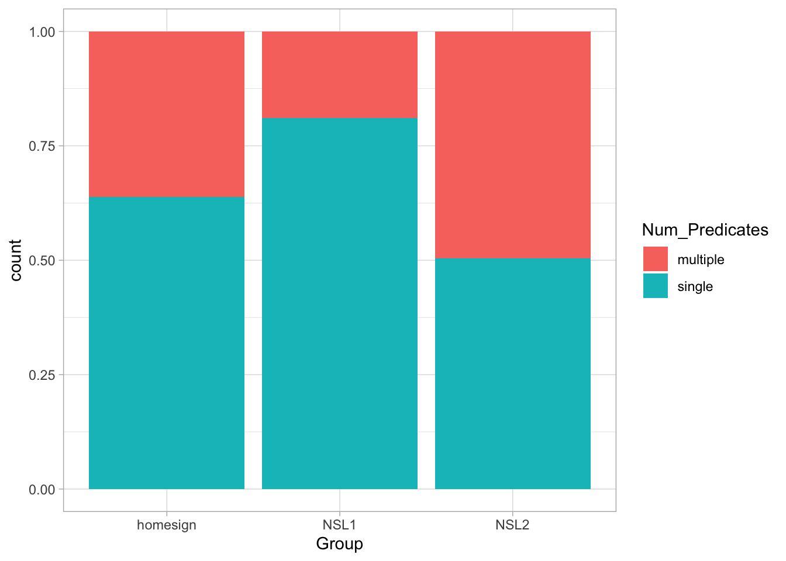
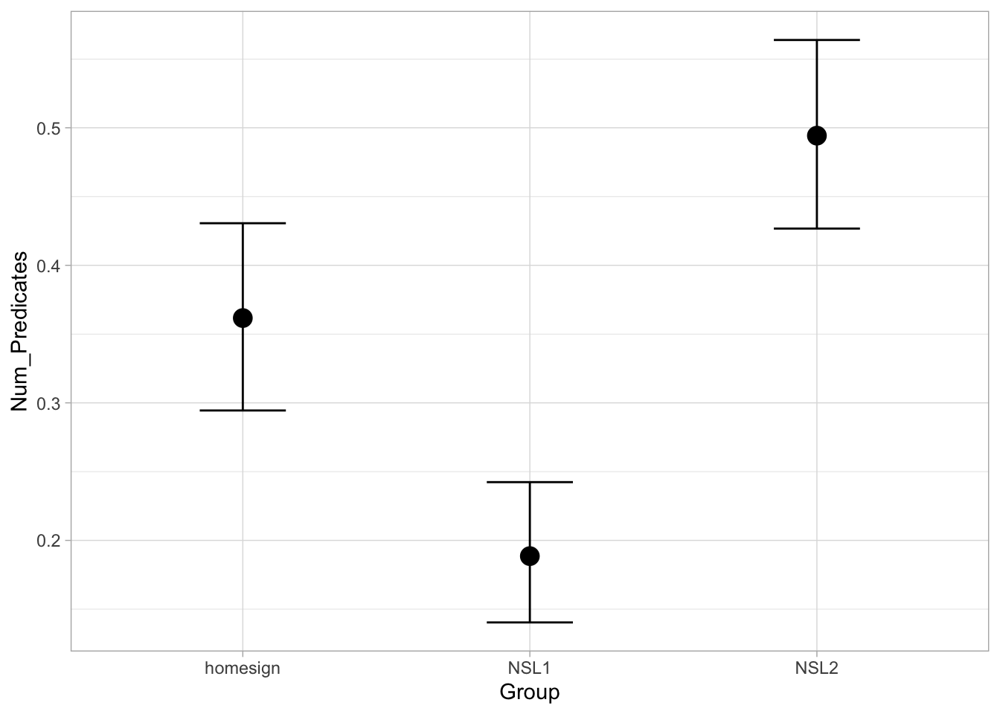

Regression: binary outcome variables
Learn how to fit regression models with binary outcome variable using the Bernoulli/binomial distribution
1 Binary outcomes and the Bernoulli family
Binary outcome variables are very common in linguistics. These are categorical variable that have two levels, e.g.:
- yes / no
- grammatical / ungrammatical
- Spanish / English
- indirect object (gave the girl the book) / to-PP (gave the book to the girl)
- correct / incorrect
So far you have been fitting regression models in which the outcome variable was numeric and continuous. However, a lot of studies use binary outcome variables and it thus important to learn how to deal with those. This is what this post is about.
When modelling binary outcomes, what the researcher is usually interested in is the probability of obtaining one of the two levels. For example, in a lexical decision task one might want to know the probability that real words were recognised as such (in other words, we are interested in accuracy: incorrect or correct response).
Let’s say there is an 80% probability of responding correctly. So (\(p()\) stands for “probability of”):
- \(p(\text{correct}) = 0.8\)
- \(p(\text{incorrect}) = 1 - p(\text{correct}) = 0.2\)
You see that if you know the probability of one level (correct) you automatically know the probability of the other level, since there are only two levels and the total probability has to sum to 1.
The distribution family for binary probabilities is the Bernoulli family. The Bernoulli family has only one parameter, \(p\), which is the probability of obtaining one of the two levels (one generally picks which level).
With out lexical decision task example, we can write:
\[ \begin{align} \text{resp}_{correct} & \sim Bernoulli(p) \\ p & = 0.8 \end{align} \]
You can read it as:
The probability of getting a correct response follows a Bernoulli distribution with \(p\) = 0.8.
If you randomly sampled from \(Bernoulli(0.8)\) you would get “correct” 80% of the times and “incorrect” 20% of the times.
Now, what we are trying to do when modelling binary outcome variables is to estimate the probability \(p\) from the data. But there is a catch: probabilities are bounded between 0 and 1 and regression models don’t work with bounded variables out of the box!
Bounded probabilities are transformed into an unbounded numeric variable. The following section explains how.
2 Probability and log-odds
As we have just learnt probabilities are bounded between 0 and 1 but we need something that is not bounded because regression models don’t work with bounded numeric variables.
This is where the logit function comes in: the logit function (from “logistic unit”) is a mathematical function that transforms probabilities into log-odds.
The plot below shows the correspondence of probabilities (on the y-axis) and log-odds (on the x-axis), as marked by the black S-shaped line. Since probabilities can’t be smaller than 0 and greater than 1, the black line slopes in either direction and it approaches 0 and 1 on the y-axis without ever reaching them (in mathematical terms, it’s an asymptotic line). It is helpful to just memorise that probability 0.5 corresponds to log-odds 0.
When you fit a regression model with a binary outcome and a Bernoulli family, the estimates are in log-odds. To transform log-odds back into probability, one uses the inverse logit (or logistic) function. The logit and inverse logit functions in R are applied with the qlogis() and plogis() functions respectively.
p <- 0.3
# from probability to log-odds
LO <- qlogis(p)
LO[1] -0.8472979# from log-odds to probability
plogis(LO)[1] 0.3That is all you have to understand for now to be able to fit and interpret a Bernoulli regression!
3 Fitting a Bernoulli model
3.1 The data
To illustrate how to fit a Bernoulli model, we will use data from Brentari 2024 on the emergent Nicaraguan Sign Language (Lengua de Señas Nicaragüense, NSL).
verb_org <- read_csv("data/brentari2024/verb_org.csv")Rows: 630 Columns: 6
── Column specification ────────────────────────────────────────────────────────
Delimiter: ","
chr (5): Group, Object, Number, Agency, Num_Predicates
dbl (1): Participant
ℹ Use `spec()` to retrieve the full column specification for this data.
ℹ Specify the column types or set `show_col_types = FALSE` to quiet this message.verb_org contains information on predicates as signed by three groups (Group): home-signers (homesign), first generation NSL signers (NSL1) and second generation NSL signers (NSL2). Specifically, the data coded in Num_Predicates whether the predicates uttered by the signer were single-verb predicates (SVP, single) or a multi-verb predicates (MVP, multiple). The hypothesis of the study is that use of multi-verb predicates would increase with each generation, i.e. that NSL1 signers would use more MVPs than home-signers and that NSL2 signers would use more MVPs than home-signers and NSL1 signers. (For the linguistic reasons behind this hypothesis, check the paper linked above).
Let’s plot the data to learn a bit more about it.
verb_org |>
ggplot(aes(Group, fill = Num_Predicates)) +
geom_bar(position = "fill")
What do you notice about the type of predicates in the three groups?
To assess the study hypothesis, we can fit a Bernoulli model with Num_Predicates as the outcome variable and Group as the predictor.
Before we move on onto fitting the model, it is useful to transform Num_Predicates into a factor and specify the order of the levels so that single is the first level and multiple is the second level.
This is useful because Bernoulli models estimate the probability (the parameter \(p\) in \(Bernoulli(p)\) of getting the second level in the outcome variable.
You can also think of this in terms of 0s and 1s: the first level is assigned to 0 and the second level is assigned to 1. Then a Bernoulli distribution with probability \(p\) tells you the probability of getting a 1. It doesn’t matter how you prefer to think about Bernoulli distributions, as long as you remember that the probability being estimated is the probability of the second level.
Now let’s mutate verb_org.
verb_org <- verb_org |>
mutate(
Num_Predicates = factor(Num_Predicates, levels = c("single", "multiple"))
)If you reproduce the plot above you will see now that the order of Num_Predicates in the legend is “single” then “multiple” and that the order of the proportions in the bar chart have flipped.
Now we can move on onto modelling.
3.2 The model
\[ \begin{align} \text{Num\_Preds}_{MVP} & \sim Bernoulli(p_i) \\ logit(p_i) & = \alpha_{\text{Group}[i]} \\ \end{align} \]
The probability of using an MVP follows a Bernoulli distribution with probability \(p\).
The log-odds of \(p\) are equal to \(\alpha\) for each Group.
In other words, the model estimates \(p\) for each group. Here is the code. Remember that to use the indexing approach for categorical predictors (Group) we need to suppress the intercept with the 0 + syntax.
mvp_bm <- brm(
Num_Predicates ~ 0 + Group,
family = bernoulli,
data = verb_org,
cores = 4,
seed = 1329,
file = "data/cache/regression-bernoulli_mvp_bm"
)Let’s inspect the model summary (we will get 80% CrIs).
summary(mvp_bm, prob = 0.8) Family: bernoulli
Links: mu = logit
Formula: Num_Predicates ~ 0 + Group
Data: verb_org (Number of observations: 630)
Draws: 4 chains, each with iter = 2000; warmup = 1000; thin = 1;
total post-warmup draws = 4000
Regression Coefficients:
Estimate Est.Error l-80% CI u-80% CI Rhat Bulk_ESS Tail_ESS
Grouphomesign -0.57 0.15 -0.76 -0.38 1.00 4424 3005
GroupNSL1 -1.46 0.17 -1.68 -1.24 1.00 3797 2995
GroupNSL2 -0.02 0.14 -0.21 0.16 1.00 4020 2851
Draws were sampled using sampling(NUTS). For each parameter, Bulk_ESS
and Tail_ESS are effective sample size measures, and Rhat is the potential
scale reduction factor on split chains (at convergence, Rhat = 1).Based on the model, there is an 80% probability that the log-odds of a MVP are between -0.76 and -0.38 in home-signers, between -1.68 and -1.24 in NSL1 signers and between -0.21 and 0.16 in NSL2 signers.
It’s easier to understand the results if we convert the log-odds to probabilities. The quickest way to do this is to get the Regression Coefficients table from the summary with fixef() and mutate the Q columns with plogis().
fixef(mvp_bm, prob = c(0.1, 0.9)) |>
# we need to convert the output of fixef() to a tibble to use mutate()
as_tibble() |>
# we plogis() the Q columns and round to the second digit
mutate(
Q10 = round(plogis(Q10), 2),
Q90 = round(plogis(Q90), 2)
)Based on the model, there is an 80% probability that the probability of using an MVP is between 32-41% in home-signers, between 16-22% in NSL1 signers and between 45-54% in NSL2 signers.
We can now see more clearly that the hypothesis of the study is not fully borne out by the data: while NSL2 signers are more likely to use an MVP than home-signers and NSL1 signers, it is not the case that NSL1 signers are more likely to use MVPs than home-signers.
To conclude this introduction to Bernoulli models (aka binomial/logistic regressions) we can get the predicted probabilities of use of MVPs in the three groups with conditional_effects().
conditional_effects(mvp_bm)